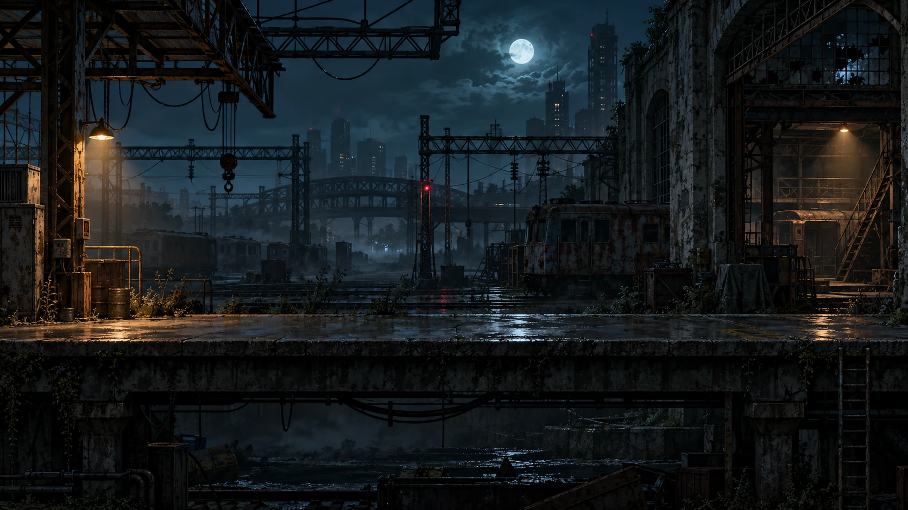

CURRENT PHASE / 沉淀整理
先回看积累，把下一步记下来。
当前暂停新增试玩。十五个独立方向、107 种形式对照与历史版本继续保留；阶段结论和十二项尚未启动的扩展设想已集中归档。

GAME WORLDS / PLAYABLE COLLECTION
喜欢的世界，
可以继续留下来。
原有九款与全部画风继续保留，每款分别记住你的选择。
再从一百零七个扩展试玩里，寻找下一种想体验的玩法。
107扩展方向3本轮新增9保留的世界
01 / 停电之后 原创场景美术
CHOOSE YOUR WORLD
先选想要的体验。
原有世界与扩展试玩分别展示。
每个入口都有自己的操作、目标与结果。
116 个入口点击卡片即可进入试玩
没有匹配的方向，换一个关键词试试。
01 / 2.5D SUSPENSE
停电之后
◈世界正在打开载入场景与角色素材
当前目标
进度保存在此浏览器
PRESERVED WORLDS
已经走过的世界，继续留着。
原有九款和独立原画版仍可进入，进度分别保存。新的关卡使用自己的存档。